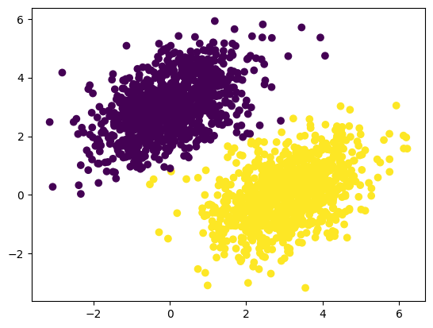
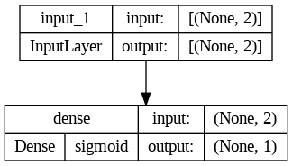
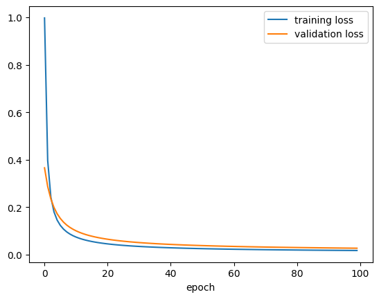

pip install tensorflowModul 7 Praktikum Sains Data: Pengantar Neural Network dengan TensorFlow & Keras
Modul 7 Praktikum Sains Data: Pengantar Neural Network dengan TensorFlow & Keras
Kembali ke Sains Data
Sekarang kita sudah masuk ke materi artificial neural network (ANN) atau biasa disebut neural network (NN), yang mendasari dunia deep learning.
Saat modul praktikum ini disusun (April 2024), ada dua framework utama untuk deep learning di Python, yaitu:
TensorFlow: https://www.tensorflow.org/
(dan Keras di dalamnya: https://keras.io/)
PyTorch: https://pytorch.org/
Kedua framework ini bersaing. Umumnya, TensorFlow lebih sering digunakan di industri, sedangkan PyTorch lebih sering digunakan dalam riset/penelitian.
Di pertemuan kali ini, kita akan membahas TensorFlow, baik penggunaannya secara sendiri (pure TensorFlow, yaitu tanpa Keras) maupun dengan bantuan Keras. Kalau belum punya, instal terlebih dahulu:
Keras terinstal bersama TensorFlow (karena Keras ada di dalamnya).
Lalu import:
import tensorflow as tf
from tensorflow import keras
import numpy as np
import pandas as pd
import matplotlib.pyplot as pltTeori Neural Network
Overview:
Secara umum, suatu neural network terdiri dari sejumlah layer atau lapisan (minimal dua).
Layer pertama disebut input layer, dan layer terakhir disebut output layer.
Tiap layer terdiri dari sejumlah neuron, yang masing-masing bisa menyimpan suatu nilai.
Kecuali input layer, tiap neuron terhubung dengan sejumlah neuron di layer sebelumnya.
Tiap sambungan terdiri dari nilai weight (sebagai pengali), nilai bias (sebagai pergeseran), dan suatu “fungsi aktivasi” yang menghasilkan nilai untuk neuron tujuan.
Weight maupun bias disebut parameter dari neural network.
Proses training adalah terus-menerus memperbarui parameter hingga hasil prediksi neural network sudah cukup baik, dengan meminimumkan suatu loss function atau fungsi objektif (yang intinya menghitung error).
Suatu neural network bisa memiliki sejumlah layer, masing-masing dengan banyaknya neuron tertentu dan fungsi-fungsi aktivasi tertentu. Hal-hal itu disebut hyperparameter dari neural network. Suatu arsitektur adalah suatu pilihan/konfigurasi hyperparameter.
SLP: (Single-Layer) Perceptron
ANN paling pertama adalah perceptron (juga disebut SLP atau single-layer perceptron) yang dirancang oleh Frank Rosenblatt pada tahun 1957 (Géron, 2019). Ini adalah neural network yang paling sederhana, bahkan ini bisa disebut building block dari semua ANN (apabila diberi kebebasan untuk modifikasi). Konsep dasar neural network bisa kita pelajari di sini.

Sumber gambar: Aggarwal (2018) hal. 5
Perceptron hanya terdiri dari satu input layer dan satu output layer. Bahkan, aslinya hanya ada satu neuron di output layer.
Apabila dibutuhkan lebih dari satu neuron di output layer, itu bisa dianggap menggunakan lebih dari satu perceptron (yaitu menggunakan banyaknya perceptron sesuai banyaknya neuron di output layer), yang saling “ditumpuk”:

Sumber gambar: Goodfellow, et. al. (2016) hal. 337
Perhatikan bahwa, tiap neuron di layer asal terhubung dengan tiap neuron di layer tujuan. Layer tujuan seperti ini disebut dense (padat). Kebalikan dari dense adalah sparse.
Aslinya, fungsi aktivasi yang digunakan oleh perceptron adalah Heaviside step function \(H(v)\) yang mungkin kalian kenal dari mata kuliah PDB, atau juga disebut threshold activation function:
\[H(v) = \begin{cases} 1, & v \ge 0 \\ 0, & v < 0 \end{cases}\]
Sehingga, untuk output neuron ke-\(j\) yang disambung dari \(n\) input neuron, model perceptron bisa dirumuskan sebagai berikut:
\[y_j = H\left(\left(\sum_{i=1}^{n} w_{ij} x_i \right) + b_j\right)\]
dengan
\(x_i\) adalah nilai pada input neuron ke-\(i\)
\(y_j\) adalah nilai pada output neuron ke-\(j\)
\(w_{ij}\) adalah parameter weight untuk sambungan input neuron ke-\(i\) menuju output neuron ke-\(j\)
\(b_j\) adalah parameter bias untuk output neuron ke-\(j\)
Lebih umumnya,
\[y_j = \Phi\left(\left(\sum_{i=1}^{n} w_{ij} x_i \right) + b_j\right)\]
dengan \(\Phi(v)\) adalah sembarang fungsi aktivasi.
Note: seperti di gambar, sebenarnya bias juga bisa dianggap neuron istimewa yang nilai \(x_i\) nya selalu satu.
Biasanya, semua nilai di layer selanjutnya dihitung secara sekaligus menggunakan perkalian matriks, dengan perumusan:
\[\textbf{y} = \Phi\left(W^T \textbf{x} + \textbf{b}\right)\]
dengan \(\textbf{x} = [x_i]\), \(\textbf{y} = [y_j]\), dan \(\textbf{b} = [b_j]\) adalah vektor kolom, serta \(W = \left[w_{ij}\right]\) adalah matriks.
Itu untuk satu buah data training.
Bisa saja, beberapa data training diperhitungkan sekaligus. Caranya, vektor kolom \(\textbf{x}\) itu kita “lebarkan” ke samping sehingga menjadi matriks \(X = [x_{it}]\), sehingga data training ke-\(t\) ada di kolom ke-\(t\). Dengan demikian, output nya akan berupa matriks \(Y = [y_{jt}]\) dengan hasil untuk data training ke-\(t\) ada di kolom ke-\(t\). Selain itu, vektor \(\textbf{b}\) perlu diperluas menjadi matriks \(B\) dengan tiap kolom identik, dan fungsi aktivasi \(\Phi\) dihitung per kolom.
\[Y = \Phi\left(W^T X + B\right)\]
Kembali ke kasus satu buah data training. Biasanya, dataset disajikan dengan tiap fitur di kolom sendiri, tidak seperti perumusan kita sejauh ini dengan tiap fitur di baris tersendiri. Untuk menyesuaikan, kita bisa men-transpose semuanya:
\[\textbf{y} = \Phi\left(\textbf{x} W + \textbf{b}\right)\]
dengan \(\textbf{x} = [x_i]\), \(\textbf{y} = [y_j]\), dan \(\textbf{b} = [b_j]\) adalah vektor baris, serta \(W = \left[w_{ji}\right]\) adalah matriks berisi bobot untuk menyambung ke output neuron ke-\(j\) dari input neuron ke-\(i\).
MLP: Multilayer Perceptron
Konsep single-layer perceptron bisa diperumum menjadi multilayer perceptron atau neural network yang biasa kita kenal, dengan menambahkan beberapa layer di antara input layer dan output layer. Semua layer selain input layer dan output layer disebut hidden layer.

Sumber gambar: Aggarwal (2018) hal. 18
Konsep perhitungan antara tiap layer tetap sama, yaitu
\[\textbf{y} = \Phi\left(\textbf{w}^T \textbf{x} + \textbf{b}\right)\]
(versi vektor kolom), atau
\[\textbf{y} = \Phi\left(\textbf{x} W + \textbf{b}\right)\]
(versi vektor baris)
Fungsi Aktivasi

Sumber gambar: Aggarwal (2018) hal. 13
Beberapa fungsi aktivasi adalah (Aggarwal, 2018, hal. 12-13):
- “Linier” atau identitas
\[\Phi(v) = v\]
- Sign (fungsi tanda): \(\text{sign}(v)\) atau \(\text{sgn}(v)\)
\[ \Phi(v) = \text{sign}(v) = \begin{cases} 1, & v > 0 \\ 0, & v = 0 \\ -1, & v < 0 \end{cases} \]
- Sigmoid, terkadang dilambangkan \(\sigma(v)\) dan terkadang disebut fungsi aktivasi logistik
\[\Phi(v) = \frac{1}{1 + e^{-v}}\]
- (Soft) tanh: \(\tanh(v)\)
\[\Phi(v) = \frac{e^{2v} - 1}{e^{2v} + 1} = 2 * \text{sigmoid}(2v) - 1\]
- Rectified Linear Unit (ReLU)
\[\Phi(v) = \max\{v, 0\}\]
- Hard tanh
\[\Phi(v) = \max\{\min\{v, 1\}, -1\}\]
Fungsi aktivasi yang paling sering digunakan adalah ReLU, kecuali untuk output layer.
Untuk output layer, biasanya,
untuk regresi, banyaknya neuron sesuai banyaknya nilai prediksi (umumnya hanya satu), dan digunakan fungsi aktivasi linier
untuk klasifikasi multiclass (lebih dari dua kelas), biasanya banyaknya output neuron sesuai banyaknya kelas, dan digunakan fungsi aktivasi softmax sebagai berikut, agar output berupa peluang tiap kelas:
\[\Phi(\overline{v})_i = \frac{\exp(v_i)}{\sum_{j=1}^k \exp(v_j)}\]
- untuk klasifikasi biner, hanya ada satu neuron di output layer, dan digunakan fungsi aktivasi sigmoid. (Keberadaan hanya satu output neuron lebih hemat daripada menggunakan dua output neuron)
Loss function
Misalkan \(y_i\) adalah nilai sebenarnya dan \(\hat{y}_i\) adalah hasil prediksi.
Untuk regresi, biasa digunakan MSE (mean squared error), juga disebut L2 loss:
\[\text{MSE}(y, \hat{y}) = \frac{1}{n} \sum_{i=1}^{n} \left( y_i - \hat{y}_i \right)^2\]
Untuk klasifikasi, biasa digunakan yang namanya cross-entropy loss, juga disebut logistic loss atau log loss:
\[L_{\text{log}}(y,\hat{y}) = -(y \ln (\hat{y}) + (1 - y) \ln (1 - \hat{y}))\]
Proses training
Proses training untuk neural network dilakukan secara iteratif, yaitu tiap iterasi akan memperbarui parameter sehingga nilai loss function menjadi lebih kecil.
Tiap iterasi melakukan langkah-langkah berikut untuk tiap data training:
Forward pass: menghitung nilai output akhir, yaitu \(\hat{y}\) (hasil prediksi), berdasarkan input data training.
Menghitung loss antara \(y\) (nilai asli) dan \(\hat{y}\)
Backpropagation: menghitung gradien dari loss terhadap tiap parameter, secara “mundur”
Update optimizer: menggunakan algoritma optimizer seperti gradient descent untuk memperbarui parameter-parameter (weights and biases) berdasarkan gradien dari loss
Note: ada banyak optimizer, seperti gradient descent, SGD (stochastic gradient descent), dan Adam (adaptive moment estimation). Pilihan optimizer (serta parameter-parameter yang bisa diatur untuk optimizer, seperti learning rate) juga menjadi hyperparameter untuk neural network.
Note: istilah backward pass meliputi langkah backpropagation dan update optimizer.
Apabila data training sangat banyak, terkadang data training tersebut dibagi menjadi beberapa batch, dan tiap iterasi menggunakan batch yang berbeda. Apabila semua batch sudah diproses, sebutannya adalah satu epoch. Sehingga, satu epoch terdiri dari sejumlah iterasi sesuai banyaknya batch.
(Apabila data training tidak dibagi menjadi batch, maka satu epoch sama dengan satu iterasi.)
Contoh optimizer: metode gradient descent
Metode gradient descent mencari minimum lokal dari suatu fungsi \(g\) (dalam hal ini, loss function) dengan rumus iterasi seperti berikut:
\[\textbf{x}_{i+1} = \textbf{x}_i - \eta \nabla g\left(\textbf{x}_i\right)\]
dengan \(\eta\) adalah learning rate. Simbol nabla (\(\nabla\)) menandakan perhitungan gradien.
Perhatikan bahwa gradien menandakan arah tercepat untuk kenaikan fungsi, seringkali disebut direction of steepest ascent. Di sini, justru kita mengurangi; atau sama saja, menambah dengan kebalikannya, yaitu arah tercepat untuk penurunan fungsi. Sedangkan, learning rate melambangkan seberapa jauh kita melangkah ke arah penurunan tersebut. Harapannya, kita akan cepat konvergen menuju minimum fungsi, karena kita terus melangkah ke arah penurunan tercepat.
Variasi gradient descent adalah SGD (stochastic gradient descent). Bedanya sederhana saja:
Gradient descent selalu memanfaatkan keseluruhan data training yang diberikan (lebih tepatnya, keseluruhan batch) di tiap iterasi.
Sedangkan, SGD selalu memilih sebagian data training saja (lebih tepatnya, sebagian dari batch), dan cara memilihnya bersifat random atau disebut stokastik.
Keuntungan SGD dibandingkan gradient descent biasa:
Waktu training menjadi lebih cepat
Tidak rawan terjebak di minimum lokal: https://www.youtube.com/watch?v=UmathvAKj80&t=102
Train-Validation-Test Split
Ketika menggunakan metode machine learning yang di-training secara iteratif, seperti neural network, biasanya ada juga yang namanya validation data. Sehingga, di awal, dataset dipisah menjadi data train, data validation, dan data test.
Gunanya, kita bisa menguji akurasi model di akhir tiap epoch, menggunakan data validation daripada data test.
Rasio yang paling sering digunakan adalah 80-10-10, yaitu 80% data train, 10% data validation, dan 10% data test.
Apabila menggunakan scikit-learn, untuk melakukan train-validation-test split, caranya adalah dengan split dua kali, yaitu
Split menjadi data “train” dan data test
Data “train” itu di-split lagi menjadi data train sesungguhnya dan data validation
atau bisa juga
Split menjadi data train dan data “test”
Data “test” itu di-split lagi menjadi data validation dan data test sesungguhnya
Mengenal TensorFlow
import tensorflow as tfTensor, Konstanta
Tensor adalah semacam perumuman dari array/vektor ataupun matriks.
Skalar (bilangan) adalah tensor berdimensi nol (atau rank nol).
Array atau vektor adalah tensor berdimensi satu (atau rank satu).
Matriks adalah tensor berdimensi dua (atau rank dua).
Istilah “tensor” biasanya merujuk pada tensor berdimensi tiga (atau rank tiga), yaitu semacam matriks tapi tiga dimensi, sehingga ada baris, kolom, dan satu dimensi lagi.
Fitur tensor di TensorFlow mirip dengan fitur array di numpy, yang memang juga bisa multidimensi.
x = tf.zeros(shape = (3,4))
print(x)tf.Tensor(
[[0. 0. 0. 0.]
[0. 0. 0. 0.]
[0. 0. 0. 0.]], shape=(3, 4), dtype=float32)x = tf.ones(shape = (3,4))
print(x)tf.Tensor(
[[1. 1. 1. 1.]
[1. 1. 1. 1.]
[1. 1. 1. 1.]], shape=(3, 4), dtype=float32)Untuk menentukan array kita sendiri, di numpy digunakan numpy.array.
Untuk menentukan tensor kita sendiri, di TensorFlow digunakan tensorflow.constant (agar nilainya tidak bisa diubah) atau tensorflow.Variable (nilainya bisa diubah).
Pada umumnya (apabila tidak ada keterangan), tensor di TensorFlow berupa tensorflow.constant
const0 = tf.constant(1.5)
print(const0)tf.Tensor(1.5, shape=(), dtype=float32)print(tf.rank(const0))tf.Tensor(0, shape=(), dtype=int32)const1 = tf.constant([2.31, 4.567, 8.9])
print(const1)tf.Tensor([2.31 4.567 8.9 ], shape=(3,), dtype=float32)print(tf.rank(const1))tf.Tensor(1, shape=(), dtype=int32)const1[0] = 52.5TypeError: 'tensorflow.python.framework.ops.EagerTensor' object does not support item assignmentconst2 = tf.constant([
[1, 2.718, 3.14],
[4, 5, 6.28]
])
print(const2)tf.Tensor(
[[1. 2.718 3.14 ]
[4. 5. 6.28 ]], shape=(2, 3), dtype=float32)print(tf.rank(const2))tf.Tensor(2, shape=(), dtype=int32)Variabel dan assignment untuk tensor
v = tf.Variable(initial_value = tf.zeros(shape = (2,3)))
print(v)<tf.Variable 'Variable:0' shape=(2, 3) dtype=float32, numpy=
array([[0., 0., 0.],
[0., 0., 0.]], dtype=float32)>Assignment untuk variabel di TensorFlow dilakukan dengan .assign
v.assign(tf.ones(shape = (2,3)))
print(v)<tf.Variable 'Variable:0' shape=(2, 3) dtype=float32, numpy=
array([[1., 1., 1.],
[1., 1., 1.]], dtype=float32)>v[0, 0].assign(9)
print(v)<tf.Variable 'Variable:0' shape=(2, 3) dtype=float32, numpy=
array([[9., 1., 1.],
[1., 1., 1.]], dtype=float32)>Ada juga .assign_add, sama saja dengan +=
v.assign_add(tf.ones(shape = (2,3)))
print(v)<tf.Variable 'Variable:0' shape=(2, 3) dtype=float32, numpy=
array([[10., 2., 2.],
[ 2., 2., 2.]], dtype=float32)>Serupa, ada .assign_sub yaitu -=
v.assign_sub(tf.ones(shape = (2,3)))
print(v)<tf.Variable 'Variable:0' shape=(2, 3) dtype=float32, numpy=
array([[9., 1., 1.],
[1., 1., 1.]], dtype=float32)>Tensor random
Kita bisa membuat tensor dengan nilai yang random, misalnya dari distribusi normal atau dari distribusi uniform
# dari distribusi normal
x = tf.random.normal(shape = (2,3), mean = 0, stddev = 1)
print(x)tf.Tensor(
[[ 1.2542483 -0.41693744 1.0116149 ]
[-1.4155766 0.17204648 -0.6892854 ]], shape=(2, 3), dtype=float32)# dari distribusi uniform
x = tf.random.uniform(shape = (2,3), minval = 0, maxval = 1)
print(x)tf.Tensor(
[[0.51321495 0.26164746 0.09113109]
[0.81229377 0.67134035 0.36057925]], shape=(2, 3), dtype=float32)Operasi TensorFlow seperti numpy
Operasi di TensorFlow mirip dengan numpy
a = 4 * tf.ones((2, 2))
print(a)tf.Tensor(
[[4. 4.]
[4. 4.]], shape=(2, 2), dtype=float32)b = tf.square(a)
print(b)tf.Tensor(
[[16. 16.]
[16. 16.]], shape=(2, 2), dtype=float32)c = tf.sqrt(a)
print(c)tf.Tensor(
[[2. 2.]
[2. 2.]], shape=(2, 2), dtype=float32)d = b + c
print(d)tf.Tensor(
[[18. 18.]
[18. 18.]], shape=(2, 2), dtype=float32)# perkalian matriks
e = tf.matmul(a, c)
print(e)tf.Tensor(
[[16. 16.]
[16. 16.]], shape=(2, 2), dtype=float32)# perkalian per elemen
e *= d
print(e)tf.Tensor(
[[288. 288.]
[288. 288.]], shape=(2, 2), dtype=float32)Automatic differentiation dengan GradientTape
TensorFlow memiliki fitur yang bernama automatic differentiation, juga disebut autodiff atau autograd. Dengan fitur ini, TensorFlow bisa menghitung turunan/gradien secara otomatis. Fitur ini membedakan antara TensorFlow dengan numpy.
Caranya adalah menggunakan GradientTape seperti berikut. Semua operasi di dalam with statement dicatat oleh GradientTape, yang kemudian bisa menghitung gradiennya.
Contohnya, turunan \(x^3\) terhadap \(x\) di \(x=4\) adalah \(3(4)^2 = 48\).
x = tf.Variable(4.0)
with tf.GradientTape() as tape:
y = x ** 3
dy_dx = tape.gradient(y, x)
print(dy_dx)tf.Tensor(48.0, shape=(), dtype=float32)Tidak harus dengan tensorflow.Variable, bahkan dengan tensorflow.constant juga bisa. Namun, kita harus secara eksplisit meminta TensorFlow untuk memperhatikan nilai x, yaitu dengan .watch
x = tf.constant(4.0)
with tf.GradientTape() as tape:
tape.watch(x)
y = x ** 3
dy_dx = tape.gradient(y, x)
print(dy_dx)tf.Tensor(48.0, shape=(), dtype=float32)Kita bisa menghitung turunan kedua dengan nested with statement seperti berikut, contohnya turunan kedua dari \(x^3\) terhadap \(x\) di \(x=4\) adalah \(6(4) = 24\)
x = tf.Variable(4.0)
with tf.GradientTape() as tape2:
with tf.GradientTape() as tape1:
y = x ** 3
dy_dx = tape1.gradient(y, x)
dy2_dx2 = tape2.gradient(dy_dx, x)
print(dy2_dx2)tf.Tensor(24.0, shape=(), dtype=float32)(Pure) TensorFlow: klasifikasi biner dengan perceptron
Perceptron digunakan untuk klasifikasi biner. Mari kita coba buat model perceptron dengan pure TensorFlow, menggunakannya untuk memprediksi kelas dari titik-titik dua dimensi.
Generate dataset
Dataset titik-titik dua dimensi, dengan dua kelas (misalnya “negatif” dan “positif”), bisa kita generate:
num_samples_per_class, num_classes = 1000, 2
negative_samples = np.random.multivariate_normal(mean = [0,3], cov = [[1,0.5],[0.5,1]], size = num_samples_per_class)
positive_samples = np.random.multivariate_normal(mean = [3,0], cov = [[1,0.5],[0.5,1]], size = num_samples_per_class)
inputs = np.vstack((negative_samples, positive_samples)).astype(np.float32)
targets = np.vstack((
np.zeros((num_samples_per_class, 1), dtype = 'float32'),
np.ones((num_samples_per_class, 1), dtype = 'float32')
))print(inputs.shape)
print(targets.shape)(2000, 2)
(2000, 1)plt.scatter(inputs[:, 0], inputs[:, 1], c=targets[:, 0])
plt.show()
Kalau mau, kita bisa susun data ini ke dalam bentuk pandas DataFrame, lalu export ke CSV:
titik_negatif_positif_df = pd.DataFrame(
np.hstack([inputs, targets]),
columns = ["x", "y", "kelas"]
)titik_negatif_positif_df| x | y | kelas | |
|---|---|---|---|
| 0 | 1.173375 | 4.570637 | 0.0 |
| 1 | 0.195961 | 3.504604 | 0.0 |
| 2 | 0.121400 | 2.163783 | 0.0 |
| 3 | -1.170182 | 3.882771 | 0.0 |
| 4 | -0.424403 | 0.534641 | 0.0 |
| ... | ... | ... | ... |
| 1995 | 2.423160 | -0.337196 | 1.0 |
| 1996 | 1.949836 | -0.627813 | 1.0 |
| 1997 | 2.109928 | -0.382492 | 1.0 |
| 1998 | 4.178664 | 0.486168 | 1.0 |
| 1999 | 2.326363 | 1.228249 | 1.0 |
2000 rows × 3 columns
titik_negatif_positif_df.to_csv("./titik_negatif_positif.csv", index=False)Import kembali dataset
Tentunya, karena titik-titiknya di-generate secara random, mungkin saja titik-titik yang kalian peroleh akan sedikit berbeda, bahkan tiap kali di-run ulang akan berbeda.
Kalau kalian mau menyamakan dengan modul ini, CSV nya bisa di-download dari GitHub Pages ini: titik_negatif_positif.csv
Kita bisa import kembali:
df = pd.read_csv("./titik_negatif_positif.csv", dtype="float32")Kali ini, kita tambahkan keterangan dtype="float32". Ini penting, karena TensorFlow biasanya menangani float32 (yaitu tipe data float dengan penyimpanan 32-bit), bukan float64 yang biasa digunakan oleh pandas.
df| x | y | kelas | |
|---|---|---|---|
| 0 | 1.173375 | 4.570637 | 0.0 |
| 1 | 0.195961 | 3.504604 | 0.0 |
| 2 | 0.121400 | 2.163783 | 0.0 |
| 3 | -1.170182 | 3.882771 | 0.0 |
| 4 | -0.424403 | 0.534641 | 0.0 |
| ... | ... | ... | ... |
| 1995 | 2.423160 | -0.337196 | 1.0 |
| 1996 | 1.949836 | -0.627813 | 1.0 |
| 1997 | 2.109928 | -0.382492 | 1.0 |
| 1998 | 4.178664 | 0.486168 | 1.0 |
| 1999 | 2.326363 | 1.228249 | 1.0 |
2000 rows × 3 columns
df.info()<class 'pandas.core.frame.DataFrame'>
RangeIndex: 2000 entries, 0 to 1999
Data columns (total 3 columns):
# Column Non-Null Count Dtype
--- ------ -------------- -----
0 x 2000 non-null float32
1 y 2000 non-null float32
2 kelas 2000 non-null float32
dtypes: float32(3)
memory usage: 23.6 KBinputs_df = df.drop(columns=["kelas"])
targets_df = df[["kelas"]]inputs_df| x | y | |
|---|---|---|
| 0 | 1.173375 | 4.570637 |
| 1 | 0.195961 | 3.504604 |
| 2 | 0.121400 | 2.163783 |
| 3 | -1.170182 | 3.882771 |
| 4 | -0.424403 | 0.534641 |
| ... | ... | ... |
| 1995 | 2.423160 | -0.337196 |
| 1996 | 1.949836 | -0.627813 |
| 1997 | 2.109928 | -0.382492 |
| 1998 | 4.178664 | 0.486168 |
| 1999 | 2.326363 | 1.228249 |
2000 rows × 2 columns
targets_df| kelas | |
|---|---|
| 0 | 0.0 |
| 1 | 0.0 |
| 2 | 0.0 |
| 3 | 0.0 |
| 4 | 0.0 |
| ... | ... |
| 1995 | 1.0 |
| 1996 | 1.0 |
| 1997 | 1.0 |
| 1998 | 1.0 |
| 1999 | 1.0 |
2000 rows × 1 columns
plt.scatter(inputs_df["x"], inputs_df["y"], c=targets["kelas"])
plt.show()
TensorFlow kurang bisa menangani pandas DataFrame, sehingga harus kita ubah jadi array numpy:
inputs = inputs_df.to_numpy()
targets = targets_df.to_numpy()print(inputs.shape)
print(targets.shape)(2000, 2)
(2000, 1)Menyusun model dan training
Untuk input dua dimensi dan klasifikasi biner, kita perlu perceptron dengan dua neuron di input layer dan satu neuron di output layer. Sebelum proses training dimulai, nilai matriks \(W\) dan vektor kolom \(b\) diisi secara random terlebih dahulu.
input_dim = 2
output_dim = 1
W = tf.Variable(tf.random.normal(shape = (input_dim, output_dim)))
b = tf.Variable(tf.random.normal(shape = (output_dim,)))# forward pass
def model(inputs):
return tf.sigmoid(
tf.matmul(inputs, W) + b
)# cross entropy loss
def entropy_loss(y, yhat):
per_sample_losses = - y * tf.math.log(yhat) - (1-y) * tf.math.log(1-yhat)
return tf.reduce_mean(per_sample_losses)# satu epoch di training loop
learning_rate = 0.1
def training_step(inputs, targets):
with tf.GradientTape() as tape:
predictions = model(inputs)
loss = entropy_loss(targets, predictions)
grad_loss_wrt_W, grad_loss_wrt_b = tape.gradient(loss, [W, b])
# update menggunakan gradient descent
W.assign_sub(learning_rate * grad_loss_wrt_W)
b.assign_sub(learning_rate * grad_loss_wrt_b)
return loss# training loop
for epoch in range(100):
loss = training_step(inputs, targets)
print(f"Loss at epoch {epoch}: {loss}")Loss at epoch 0: 3.254241466522217
Loss at epoch 1: 2.841676712036133
Loss at epoch 2: 2.446164608001709
Loss at epoch 3: 2.0740654468536377
Loss at epoch 4: 1.7329306602478027
Loss at epoch 5: 1.4304780960083008
Loss at epoch 6: 1.1727027893066406
Loss at epoch 7: 0.9617642760276794
Loss at epoch 8: 0.7950283288955688
Loss at epoch 9: 0.6661190390586853
Loss at epoch 10: 0.5672049522399902
Loss at epoch 11: 0.4909631013870239
Loss at epoch 12: 0.43148183822631836
Loss at epoch 13: 0.38434457778930664
Loss at epoch 14: 0.34636563062667847
Loss at epoch 15: 0.31527045369148254
Loss at epoch 16: 0.2894296944141388
Loss at epoch 17: 0.26766350865364075
Loss at epoch 18: 0.24910621345043182
Loss at epoch 19: 0.23311251401901245
Loss at epoch 20: 0.21919457614421844
Loss at epoch 21: 0.2069779932498932
Loss at epoch 22: 0.19617150723934174
Loss at epoch 23: 0.18654564023017883
Loss at epoch 24: 0.1779175102710724
Loss at epoch 25: 0.17013971507549286
Loss at epoch 26: 0.16309219598770142
Loss at epoch 27: 0.1566763073205948
Loss at epoch 28: 0.15081030130386353
Loss at epoch 29: 0.14542590081691742
Loss at epoch 30: 0.1404656320810318
Loss at epoch 31: 0.13588076829910278
Loss at epoch 32: 0.13162976503372192
Loss at epoch 33: 0.12767699360847473
Loss at epoch 34: 0.12399168312549591
Loss at epoch 35: 0.12054720520973206
Loss at epoch 36: 0.11732034385204315
Loss at epoch 37: 0.11429077386856079
Loss at epoch 38: 0.11144062876701355
Loss at epoch 39: 0.10875413566827774
Loss at epoch 40: 0.10621732473373413
Loss at epoch 41: 0.10381780564785004
Loss at epoch 42: 0.10154449194669724
Loss at epoch 43: 0.0993875041604042
Loss at epoch 44: 0.09733790904283524
Loss at epoch 45: 0.09538772702217102
Loss at epoch 46: 0.09352975338697433
Loss at epoch 47: 0.09175743162631989
Loss at epoch 48: 0.09006485342979431
Loss at epoch 49: 0.08844659477472305
Loss at epoch 50: 0.08689778298139572
Loss at epoch 51: 0.08541391044855118
Loss at epoch 52: 0.08399088680744171
Loss at epoch 53: 0.08262495696544647
Loss at epoch 54: 0.0813126489520073
Loss at epoch 55: 0.08005079627037048
Loss at epoch 56: 0.07883644849061966
Loss at epoch 57: 0.07766692340373993
Loss at epoch 58: 0.07653970271348953
Loss at epoch 59: 0.07545248419046402
Loss at epoch 60: 0.07440309226512909
Loss at epoch 61: 0.07338955998420715
Loss at epoch 62: 0.07241000235080719
Loss at epoch 63: 0.0714627057313919
Loss at epoch 64: 0.07054606825113297
Loss at epoch 65: 0.0696585550904274
Loss at epoch 66: 0.06879876554012299
Loss at epoch 67: 0.06796539574861526
Loss at epoch 68: 0.06715719401836395
Loss at epoch 69: 0.06637301295995712
Loss at epoch 70: 0.06561177223920822
Loss at epoch 71: 0.06487242877483368
Loss at epoch 72: 0.06415403634309769
Loss at epoch 73: 0.06345568597316742
Loss at epoch 74: 0.06277652084827423
Loss at epoch 75: 0.06211574003100395
Loss at epoch 76: 0.061472587287425995
Loss at epoch 77: 0.06084632873535156
Loss at epoch 78: 0.06023630499839783
Loss at epoch 79: 0.05964187532663345
Loss at epoch 80: 0.0590624064207077
Loss at epoch 81: 0.05849733576178551
Loss at epoch 82: 0.057946112006902695
Loss at epoch 83: 0.05740822106599808
Loss at epoch 84: 0.05688317120075226
Loss at epoch 85: 0.056370481848716736
Loss at epoch 86: 0.05586971715092659
Loss at epoch 87: 0.0553804449737072
Loss at epoch 88: 0.05490226671099663
Loss at epoch 89: 0.05443479120731354
Loss at epoch 90: 0.05397764965891838
Loss at epoch 91: 0.0535304993391037
Loss at epoch 92: 0.05309300124645233
Loss at epoch 93: 0.05266483128070831
Loss at epoch 94: 0.05224568769335747
Loss at epoch 95: 0.051835279911756516
Loss at epoch 96: 0.05143332853913307
Loss at epoch 97: 0.05103955790400505
Loss at epoch 98: 0.05065372586250305
Loss at epoch 99: 0.05027557164430618Prediksi
Sekarang training sudah selesai, kita bisa gunakan model kita untuk memprediksi kelas berdasarkan inputs (koordinat titik-titik)
predictions = model(inputs)Akibat penggunaan fungsi aktivasi sigmoid, hasil prediksi cukup jelas, apakah kelas pertama (kelas 0) atau kelas kedua (kelas 1):
print(predictions)tf.Tensor(
[[0.0185734 ]
[0.01658478]
[0.06427375]
...
[0.94514835]
[0.99050665]
[0.7908128 ]], shape=(2000, 1), dtype=float32)Kita bisa menampilkan hasil prediksi ini dengan aturan pemilihan warna (c) seperti berikut:
apabila nilai prediksinya lebih dari 0.5 (pernyataan “lebih besar dari 0.5” bernilai benar), ia tergolong kelas 1 (atau sama saja nilai True);
selain itu (pernyataan “lebih besar dari 0.5” bernilai salah), ia tergolong kelas 0 (atau sama saja nilai False).
plt.scatter(inputs[:, 0], inputs[:, 1], c=predictions[:, 0] > 0.5)
plt.show()
Kinerja perceptron cukup mirip regresi logistik, ataupun SVM dengan kernel linier. Perhatikan bahwa, di hasil prediksi ini, seolah-olah ada perbatasan atau garis pemisah antara kedua kelas. Kalau kita bandingkan dengan data aslinya, sebenarnya ada beberapa titik yang melewati perbatasan tersebut, dan akhirnya terjadi misklasifikasi.
Mengenal Keras dengan Sequential API
Dengan pure TensorFlow, banyak hal yang harus kita susun secara manual. Untuk neural network kecil seperti perceptron, mungkin tidak masalah. Namun, neural network pada umumnya sangat “dalam” atau deep, dengan puluhan hidden layer yang bervariasi.
Daripada benar-benar membuatnya semua secara manual, ada yang namanya Keras yang sangat menyederhanakan proses penyusunan neural network. Biasanya, daripada benar-benar membuat neural network secara manual dalam pure TensorFlow seperti tadi, pengguna TensorFlow memanfaatkan Keras.
Keras tersedia di dalam TensorFlow:
from tensorflow import kerasPerlu dicatat, ketika menggunakan Keras, sebaiknya semua fungsi/operasi yang kita gunakan juga dari dalam Keras daripada langsung dari TensorFlow. Misalnya, daripada tf.matmul, gunakan keras.ops.matmul
Tapi kalau error, tidak masalah masih menggunakan tf karena Keras masih dalam pengembangan (menuju Keras versi 3, bisa dibaca di sini: https://keras.io/guides/migrating_to_keras_3/). Mungkin, di versi yang akan datang, sudah tidak error lagi.
Dalam Keras, ada tiga “cara” atau API (application programming interface) yang bisa kita gunakan untuk menyusun neural network, yaitu
Sequential API
Functional API
Subclassing API (yaitu dengan OOP)
Di pertemuan kali ini, kita akan mencoba cara yang paling sederhana, yaitu dengan Sequential API.
Datanya sudah siap dari yang tadi:
print(inputs.shape)
print(targets.shape)(2000, 2)
(2000, 1)Menyusun layer
Kita susun layer nya terlebih dahulu. Kali ini, kita akan membuat perceptron seperti yang cara manual / pure TensorFlow tadi. Untuk itu, kedua kode ini ekuivalen:
# langsung menentukan semua layer di awal, dengan memasukkan list
model2 = keras.Sequential(
[
keras.layers.InputLayer(input_shape = (2,)),
keras.layers.Dense(units = 1, activation = 'sigmoid')
]
)# menambahkan layer secara berangsur-angsur
model2 = keras.Sequential()
model2.add(keras.layers.InputLayer(input_shape = (2,)))
model2.add(keras.layers.Dense(units = 1, activation = 'sigmoid'))Daripada menggunakan string, untuk menentukan fungsi aktivasi di kedua cara di atas, kita juga bisa mengetik keras.activations.sigmoid seperti berikut:
# langsung menentukan semua layer di awal, dengan memasukkan list
model2 = keras.Sequential(
[
keras.layers.InputLayer(input_shape = (2,)),
keras.layers.Dense(units = 1, activation = keras.activations.sigmoid)
]
)# menambahkan layer secara berangsur-angsur
model2 = keras.Sequential()
model2.add(keras.layers.InputLayer(input_shape = (2,)))
model2.add(keras.layers.Dense(units = 1, activation = keras.activations.sigmoid))Ringkasan dan diagram model
Kemudian, kita bisa melihat ringkasan bentuk model yang dihasilkan:
model2.summary()Model: "sequential"
_________________________________________________________________
Layer (type) Output Shape Param #
=================================================================
dense (Dense) (None, 1) 3
=================================================================
Total params: 3
Trainable params: 3
Non-trainable params: 0
_________________________________________________________________Kita juga bisa menampilkan semacam diagram, bahkan menyimpannya ke dalam file:
keras.utils.plot_model(
model2,
show_shapes = True,
show_layer_activations = True,
to_file = "keras_sequential_model2.png"
)
Fun fact: Keras menggunakan Graphviz untuk membuat diagramnya :)
Memilih hyperparameter
Untuk memilih hyperparameter yaitu optimizer dan loss function (dan metrik evaluasi), kedua kode berikut ini ekuivalen:
# dengan string
model2.compile(
optimizer = "sgd",
loss = "binary_crossentropy",
metrics = ["binary_accuracy"]
)# dengan objek dari class
model2.compile(
optimizer = keras.optimizers.SGD(),
loss = keras.losses.BinaryCrossentropy(),
metrics = [keras.metrics.BinaryAccuracy()]
)Dengan cara yang kedua, kita juga bisa menentukan hyperparameter seperti learning rate:
# dengan objek dari class
model2.compile(
optimizer = keras.optimizers.SGD(learning_rate = 0.01),
loss = keras.losses.BinaryCrossentropy(),
metrics = [keras.metrics.BinaryAccuracy()]
)Training
Selanjutnya, tinggal training, menggunakan .fit seperti di scikit-learn. Bedanya, .fit di sini me-return suatu objek “history” yang berisi catatan loss di tiap epoch
x_train = inputs
y_train = targets
history2 = model2.fit(x_train, y_train, epochs=100, validation_split=0.2)Epoch 1/100
50/50 [==============================] - 2s 19ms/step - loss: 0.9972 - binary_accuracy: 0.4119 - val_loss: 0.3660 - val_binary_accuracy: 0.9975
Epoch 2/100
50/50 [==============================] - 1s 11ms/step - loss: 0.3971 - binary_accuracy: 0.9488 - val_loss: 0.2875 - val_binary_accuracy: 0.9975
Epoch 3/100
50/50 [==============================] - 0s 8ms/step - loss: 0.2427 - binary_accuracy: 0.9975 - val_loss: 0.2355 - val_binary_accuracy: 0.9925
Epoch 4/100
50/50 [==============================] - 0s 10ms/step - loss: 0.1804 - binary_accuracy: 0.9962 - val_loss: 0.1990 - val_binary_accuracy: 0.9925
Epoch 5/100
50/50 [==============================] - 0s 5ms/step - loss: 0.1459 - binary_accuracy: 0.9962 - val_loss: 0.1726 - val_binary_accuracy: 0.9925
Epoch 6/100
50/50 [==============================] - 0s 5ms/step - loss: 0.1238 - binary_accuracy: 0.9962 - val_loss: 0.1529 - val_binary_accuracy: 0.9925
Epoch 7/100
50/50 [==============================] - 0s 6ms/step - loss: 0.1082 - binary_accuracy: 0.9969 - val_loss: 0.1376 - val_binary_accuracy: 0.9925
Epoch 8/100
50/50 [==============================] - 1s 11ms/step - loss: 0.0966 - binary_accuracy: 0.9962 - val_loss: 0.1254 - val_binary_accuracy: 0.9925
Epoch 9/100
50/50 [==============================] - 0s 6ms/step - loss: 0.0875 - binary_accuracy: 0.9962 - val_loss: 0.1156 - val_binary_accuracy: 0.9925
Epoch 10/100
50/50 [==============================] - 1s 11ms/step - loss: 0.0803 - binary_accuracy: 0.9962 - val_loss: 0.1075 - val_binary_accuracy: 0.9925
Epoch 11/100
50/50 [==============================] - 0s 7ms/step - loss: 0.0744 - binary_accuracy: 0.9962 - val_loss: 0.1006 - val_binary_accuracy: 0.9925
Epoch 12/100
50/50 [==============================] - 0s 7ms/step - loss: 0.0695 - binary_accuracy: 0.9962 - val_loss: 0.0948 - val_binary_accuracy: 0.9925
Epoch 13/100
50/50 [==============================] - 0s 9ms/step - loss: 0.0653 - binary_accuracy: 0.9962 - val_loss: 0.0898 - val_binary_accuracy: 0.9925
Epoch 14/100
50/50 [==============================] - 1s 14ms/step - loss: 0.0617 - binary_accuracy: 0.9962 - val_loss: 0.0854 - val_binary_accuracy: 0.9925
Epoch 15/100
50/50 [==============================] - 0s 8ms/step - loss: 0.0585 - binary_accuracy: 0.9962 - val_loss: 0.0815 - val_binary_accuracy: 0.9925
Epoch 16/100
50/50 [==============================] - 0s 9ms/step - loss: 0.0558 - binary_accuracy: 0.9962 - val_loss: 0.0781 - val_binary_accuracy: 0.9925
Epoch 17/100
50/50 [==============================] - 0s 5ms/step - loss: 0.0533 - binary_accuracy: 0.9962 - val_loss: 0.0750 - val_binary_accuracy: 0.9925
Epoch 18/100
50/50 [==============================] - 1s 17ms/step - loss: 0.0511 - binary_accuracy: 0.9962 - val_loss: 0.0722 - val_binary_accuracy: 0.9925
Epoch 19/100
50/50 [==============================] - 1s 17ms/step - loss: 0.0492 - binary_accuracy: 0.9962 - val_loss: 0.0697 - val_binary_accuracy: 0.9925
Epoch 20/100
50/50 [==============================] - 1s 12ms/step - loss: 0.0474 - binary_accuracy: 0.9962 - val_loss: 0.0674 - val_binary_accuracy: 0.9925
Epoch 21/100
50/50 [==============================] - 0s 8ms/step - loss: 0.0458 - binary_accuracy: 0.9962 - val_loss: 0.0653 - val_binary_accuracy: 0.9925
Epoch 22/100
50/50 [==============================] - 1s 27ms/step - loss: 0.0443 - binary_accuracy: 0.9962 - val_loss: 0.0634 - val_binary_accuracy: 0.9925
Epoch 23/100
50/50 [==============================] - 0s 10ms/step - loss: 0.0429 - binary_accuracy: 0.9969 - val_loss: 0.0616 - val_binary_accuracy: 0.9925
Epoch 24/100
50/50 [==============================] - 0s 9ms/step - loss: 0.0417 - binary_accuracy: 0.9969 - val_loss: 0.0600 - val_binary_accuracy: 0.9925
Epoch 25/100
50/50 [==============================] - 0s 8ms/step - loss: 0.0405 - binary_accuracy: 0.9969 - val_loss: 0.0585 - val_binary_accuracy: 0.9925
Epoch 26/100
50/50 [==============================] - 1s 12ms/step - loss: 0.0394 - binary_accuracy: 0.9969 - val_loss: 0.0571 - val_binary_accuracy: 0.9925
Epoch 27/100
50/50 [==============================] - 0s 7ms/step - loss: 0.0384 - binary_accuracy: 0.9969 - val_loss: 0.0558 - val_binary_accuracy: 0.9925
Epoch 28/100
50/50 [==============================] - 0s 6ms/step - loss: 0.0375 - binary_accuracy: 0.9969 - val_loss: 0.0545 - val_binary_accuracy: 0.9925
Epoch 29/100
50/50 [==============================] - 0s 5ms/step - loss: 0.0366 - binary_accuracy: 0.9969 - val_loss: 0.0534 - val_binary_accuracy: 0.9925
Epoch 30/100
50/50 [==============================] - 0s 5ms/step - loss: 0.0358 - binary_accuracy: 0.9969 - val_loss: 0.0523 - val_binary_accuracy: 0.9925
Epoch 31/100
50/50 [==============================] - 0s 6ms/step - loss: 0.0351 - binary_accuracy: 0.9969 - val_loss: 0.0513 - val_binary_accuracy: 0.9925
Epoch 32/100
50/50 [==============================] - 0s 9ms/step - loss: 0.0343 - binary_accuracy: 0.9969 - val_loss: 0.0503 - val_binary_accuracy: 0.9925
Epoch 33/100
50/50 [==============================] - 0s 7ms/step - loss: 0.0337 - binary_accuracy: 0.9969 - val_loss: 0.0494 - val_binary_accuracy: 0.9925
Epoch 34/100
50/50 [==============================] - 0s 5ms/step - loss: 0.0330 - binary_accuracy: 0.9969 - val_loss: 0.0485 - val_binary_accuracy: 0.9925
Epoch 35/100
50/50 [==============================] - 0s 9ms/step - loss: 0.0324 - binary_accuracy: 0.9969 - val_loss: 0.0477 - val_binary_accuracy: 0.9925
Epoch 36/100
50/50 [==============================] - 1s 11ms/step - loss: 0.0318 - binary_accuracy: 0.9969 - val_loss: 0.0469 - val_binary_accuracy: 0.9925
Epoch 37/100
50/50 [==============================] - 0s 6ms/step - loss: 0.0313 - binary_accuracy: 0.9969 - val_loss: 0.0462 - val_binary_accuracy: 0.9925
Epoch 38/100
50/50 [==============================] - 0s 7ms/step - loss: 0.0308 - binary_accuracy: 0.9969 - val_loss: 0.0455 - val_binary_accuracy: 0.9925
Epoch 39/100
50/50 [==============================] - 0s 8ms/step - loss: 0.0303 - binary_accuracy: 0.9969 - val_loss: 0.0448 - val_binary_accuracy: 0.9925
Epoch 40/100
50/50 [==============================] - 0s 8ms/step - loss: 0.0298 - binary_accuracy: 0.9969 - val_loss: 0.0442 - val_binary_accuracy: 0.9925
Epoch 41/100
50/50 [==============================] - 0s 5ms/step - loss: 0.0293 - binary_accuracy: 0.9969 - val_loss: 0.0435 - val_binary_accuracy: 0.9925
Epoch 42/100
50/50 [==============================] - 0s 4ms/step - loss: 0.0289 - binary_accuracy: 0.9969 - val_loss: 0.0429 - val_binary_accuracy: 0.9925
Epoch 43/100
50/50 [==============================] - 0s 9ms/step - loss: 0.0285 - binary_accuracy: 0.9969 - val_loss: 0.0424 - val_binary_accuracy: 0.9925
Epoch 44/100
50/50 [==============================] - 0s 7ms/step - loss: 0.0281 - binary_accuracy: 0.9969 - val_loss: 0.0418 - val_binary_accuracy: 0.9925
Epoch 45/100
50/50 [==============================] - 0s 7ms/step - loss: 0.0277 - binary_accuracy: 0.9969 - val_loss: 0.0413 - val_binary_accuracy: 0.9925
Epoch 46/100
50/50 [==============================] - 1s 10ms/step - loss: 0.0274 - binary_accuracy: 0.9969 - val_loss: 0.0408 - val_binary_accuracy: 0.9925
Epoch 47/100
50/50 [==============================] - 0s 5ms/step - loss: 0.0270 - binary_accuracy: 0.9969 - val_loss: 0.0403 - val_binary_accuracy: 0.9925
Epoch 48/100
50/50 [==============================] - 0s 6ms/step - loss: 0.0267 - binary_accuracy: 0.9969 - val_loss: 0.0399 - val_binary_accuracy: 0.9925
Epoch 49/100
50/50 [==============================] - 0s 5ms/step - loss: 0.0263 - binary_accuracy: 0.9969 - val_loss: 0.0394 - val_binary_accuracy: 0.9925
Epoch 50/100
50/50 [==============================] - 0s 8ms/step - loss: 0.0260 - binary_accuracy: 0.9969 - val_loss: 0.0390 - val_binary_accuracy: 0.9925
Epoch 51/100
50/50 [==============================] - 0s 4ms/step - loss: 0.0257 - binary_accuracy: 0.9969 - val_loss: 0.0386 - val_binary_accuracy: 0.9925
Epoch 52/100
50/50 [==============================] - 0s 5ms/step - loss: 0.0254 - binary_accuracy: 0.9969 - val_loss: 0.0382 - val_binary_accuracy: 0.9925
Epoch 53/100
50/50 [==============================] - 0s 8ms/step - loss: 0.0252 - binary_accuracy: 0.9969 - val_loss: 0.0378 - val_binary_accuracy: 0.9925
Epoch 54/100
50/50 [==============================] - 0s 8ms/step - loss: 0.0249 - binary_accuracy: 0.9969 - val_loss: 0.0374 - val_binary_accuracy: 0.9925
Epoch 55/100
50/50 [==============================] - 0s 7ms/step - loss: 0.0246 - binary_accuracy: 0.9969 - val_loss: 0.0371 - val_binary_accuracy: 0.9925
Epoch 56/100
50/50 [==============================] - 1s 10ms/step - loss: 0.0244 - binary_accuracy: 0.9969 - val_loss: 0.0367 - val_binary_accuracy: 0.9925
Epoch 57/100
50/50 [==============================] - 0s 7ms/step - loss: 0.0241 - binary_accuracy: 0.9969 - val_loss: 0.0364 - val_binary_accuracy: 0.9925
Epoch 58/100
50/50 [==============================] - 0s 5ms/step - loss: 0.0239 - binary_accuracy: 0.9969 - val_loss: 0.0360 - val_binary_accuracy: 0.9925
Epoch 59/100
50/50 [==============================] - 0s 7ms/step - loss: 0.0237 - binary_accuracy: 0.9969 - val_loss: 0.0357 - val_binary_accuracy: 0.9925
Epoch 60/100
50/50 [==============================] - 0s 5ms/step - loss: 0.0234 - binary_accuracy: 0.9969 - val_loss: 0.0354 - val_binary_accuracy: 0.9925
Epoch 61/100
50/50 [==============================] - 0s 7ms/step - loss: 0.0232 - binary_accuracy: 0.9969 - val_loss: 0.0351 - val_binary_accuracy: 0.9925
Epoch 62/100
50/50 [==============================] - 0s 5ms/step - loss: 0.0230 - binary_accuracy: 0.9969 - val_loss: 0.0348 - val_binary_accuracy: 0.9925
Epoch 63/100
50/50 [==============================] - 0s 9ms/step - loss: 0.0228 - binary_accuracy: 0.9969 - val_loss: 0.0345 - val_binary_accuracy: 0.9925
Epoch 64/100
50/50 [==============================] - 0s 4ms/step - loss: 0.0226 - binary_accuracy: 0.9969 - val_loss: 0.0342 - val_binary_accuracy: 0.9925
Epoch 65/100
50/50 [==============================] - 0s 5ms/step - loss: 0.0224 - binary_accuracy: 0.9969 - val_loss: 0.0340 - val_binary_accuracy: 0.9925
Epoch 66/100
50/50 [==============================] - 1s 10ms/step - loss: 0.0222 - binary_accuracy: 0.9969 - val_loss: 0.0337 - val_binary_accuracy: 0.9925
Epoch 67/100
50/50 [==============================] - 0s 6ms/step - loss: 0.0220 - binary_accuracy: 0.9969 - val_loss: 0.0335 - val_binary_accuracy: 0.9925
Epoch 68/100
50/50 [==============================] - 0s 5ms/step - loss: 0.0219 - binary_accuracy: 0.9969 - val_loss: 0.0332 - val_binary_accuracy: 0.9925
Epoch 69/100
50/50 [==============================] - 0s 6ms/step - loss: 0.0217 - binary_accuracy: 0.9969 - val_loss: 0.0330 - val_binary_accuracy: 0.9925
Epoch 70/100
50/50 [==============================] - 0s 5ms/step - loss: 0.0215 - binary_accuracy: 0.9969 - val_loss: 0.0327 - val_binary_accuracy: 0.9925
Epoch 71/100
50/50 [==============================] - 0s 6ms/step - loss: 0.0214 - binary_accuracy: 0.9969 - val_loss: 0.0325 - val_binary_accuracy: 0.9925
Epoch 72/100
50/50 [==============================] - 0s 7ms/step - loss: 0.0212 - binary_accuracy: 0.9969 - val_loss: 0.0323 - val_binary_accuracy: 0.9925
Epoch 73/100
50/50 [==============================] - 1s 15ms/step - loss: 0.0211 - binary_accuracy: 0.9969 - val_loss: 0.0320 - val_binary_accuracy: 0.9925
Epoch 74/100
50/50 [==============================] - 0s 8ms/step - loss: 0.0209 - binary_accuracy: 0.9969 - val_loss: 0.0318 - val_binary_accuracy: 0.9925
Epoch 75/100
50/50 [==============================] - 0s 8ms/step - loss: 0.0208 - binary_accuracy: 0.9969 - val_loss: 0.0316 - val_binary_accuracy: 0.9925
Epoch 76/100
50/50 [==============================] - 0s 8ms/step - loss: 0.0206 - binary_accuracy: 0.9969 - val_loss: 0.0314 - val_binary_accuracy: 0.9925
Epoch 77/100
50/50 [==============================] - 1s 20ms/step - loss: 0.0205 - binary_accuracy: 0.9969 - val_loss: 0.0312 - val_binary_accuracy: 0.9925
Epoch 78/100
50/50 [==============================] - 1s 11ms/step - loss: 0.0203 - binary_accuracy: 0.9969 - val_loss: 0.0310 - val_binary_accuracy: 0.9925
Epoch 79/100
50/50 [==============================] - 0s 8ms/step - loss: 0.0202 - binary_accuracy: 0.9969 - val_loss: 0.0308 - val_binary_accuracy: 0.9925
Epoch 80/100
50/50 [==============================] - 0s 8ms/step - loss: 0.0201 - binary_accuracy: 0.9969 - val_loss: 0.0306 - val_binary_accuracy: 0.9925
Epoch 81/100
50/50 [==============================] - 0s 9ms/step - loss: 0.0199 - binary_accuracy: 0.9969 - val_loss: 0.0304 - val_binary_accuracy: 0.9925
Epoch 82/100
50/50 [==============================] - 0s 9ms/step - loss: 0.0198 - binary_accuracy: 0.9969 - val_loss: 0.0303 - val_binary_accuracy: 0.9925
Epoch 83/100
50/50 [==============================] - 0s 4ms/step - loss: 0.0197 - binary_accuracy: 0.9969 - val_loss: 0.0301 - val_binary_accuracy: 0.9925
Epoch 84/100
50/50 [==============================] - 0s 5ms/step - loss: 0.0196 - binary_accuracy: 0.9969 - val_loss: 0.0299 - val_binary_accuracy: 0.9925
Epoch 85/100
50/50 [==============================] - 0s 6ms/step - loss: 0.0194 - binary_accuracy: 0.9969 - val_loss: 0.0298 - val_binary_accuracy: 0.9925
Epoch 86/100
50/50 [==============================] - 0s 8ms/step - loss: 0.0193 - binary_accuracy: 0.9969 - val_loss: 0.0296 - val_binary_accuracy: 0.9925
Epoch 87/100
50/50 [==============================] - 0s 5ms/step - loss: 0.0192 - binary_accuracy: 0.9969 - val_loss: 0.0294 - val_binary_accuracy: 0.9925
Epoch 88/100
50/50 [==============================] - 1s 12ms/step - loss: 0.0191 - binary_accuracy: 0.9969 - val_loss: 0.0293 - val_binary_accuracy: 0.9925
Epoch 89/100
50/50 [==============================] - 0s 9ms/step - loss: 0.0190 - binary_accuracy: 0.9969 - val_loss: 0.0291 - val_binary_accuracy: 0.9925
Epoch 90/100
50/50 [==============================] - 1s 14ms/step - loss: 0.0189 - binary_accuracy: 0.9969 - val_loss: 0.0290 - val_binary_accuracy: 0.9925
Epoch 91/100
50/50 [==============================] - 1s 13ms/step - loss: 0.0188 - binary_accuracy: 0.9969 - val_loss: 0.0288 - val_binary_accuracy: 0.9925
Epoch 92/100
50/50 [==============================] - 0s 6ms/step - loss: 0.0187 - binary_accuracy: 0.9969 - val_loss: 0.0287 - val_binary_accuracy: 0.9925
Epoch 93/100
50/50 [==============================] - 0s 5ms/step - loss: 0.0186 - binary_accuracy: 0.9969 - val_loss: 0.0285 - val_binary_accuracy: 0.9925
Epoch 94/100
50/50 [==============================] - 0s 4ms/step - loss: 0.0185 - binary_accuracy: 0.9969 - val_loss: 0.0284 - val_binary_accuracy: 0.9925
Epoch 95/100
50/50 [==============================] - 0s 3ms/step - loss: 0.0184 - binary_accuracy: 0.9969 - val_loss: 0.0282 - val_binary_accuracy: 0.9925
Epoch 96/100
50/50 [==============================] - 0s 8ms/step - loss: 0.0183 - binary_accuracy: 0.9969 - val_loss: 0.0281 - val_binary_accuracy: 0.9925
Epoch 97/100
50/50 [==============================] - 0s 5ms/step - loss: 0.0182 - binary_accuracy: 0.9969 - val_loss: 0.0280 - val_binary_accuracy: 0.9925
Epoch 98/100
50/50 [==============================] - 0s 3ms/step - loss: 0.0181 - binary_accuracy: 0.9969 - val_loss: 0.0278 - val_binary_accuracy: 0.9925
Epoch 99/100
50/50 [==============================] - 0s 7ms/step - loss: 0.0180 - binary_accuracy: 0.9969 - val_loss: 0.0277 - val_binary_accuracy: 0.9925
Epoch 100/100
50/50 [==============================] - 1s 19ms/step - loss: 0.0179 - binary_accuracy: 0.9969 - val_loss: 0.0276 - val_binary_accuracy: 0.9925Objek “history” tersebut memiliki dictionary .history. Kita bisa lihat, apa saja key yang ada:
print(history2.history.keys())dict_keys(['loss', 'binary_accuracy', 'val_loss', 'val_binary_accuracy'])Tiap key menyimpan data per epoch, sehingga ukurannya sama semua. Oleh karena itu, sebenarnya dictionary ini bisa diubah menjadi pandas DataFrame, yang kemudian bisa kita simpan ke CSV:
pd.DataFrame(history2.history).to_csv("./keras_sequential_history2.csv", index=False)Kalau mau menyamakan, file nya bisa kalian download dari GitHub Pages ini: keras_sequential_history2.csv
Kemudian, kita bisa load kembali:
history2_df = pd.read_csv("./keras_sequential_history2.csv")history2_df| loss | binary_accuracy | val_loss | val_binary_accuracy | |
|---|---|---|---|---|
| 0 | 0.997174 | 0.411875 | 0.365997 | 0.9975 |
| 1 | 0.397132 | 0.948750 | 0.287524 | 0.9975 |
| 2 | 0.242701 | 0.997500 | 0.235491 | 0.9925 |
| 3 | 0.180374 | 0.996250 | 0.199048 | 0.9925 |
| 4 | 0.145923 | 0.996250 | 0.172641 | 0.9925 |
| ... | ... | ... | ... | ... |
| 95 | 0.018302 | 0.996875 | 0.028094 | 0.9925 |
| 96 | 0.018211 | 0.996875 | 0.027959 | 0.9925 |
| 97 | 0.018120 | 0.996875 | 0.027828 | 0.9925 |
| 98 | 0.018030 | 0.996875 | 0.027700 | 0.9925 |
| 99 | 0.017943 | 0.996875 | 0.027570 | 0.9925 |
100 rows × 4 columns
Dua catatan yang paling sering diperhatikan adalah loss (training loss) dan juga val_loss (validation loss). Bahkan, seringkali kedua nilai ini dibuat gambar plotnya (terhadap epoch), untuk menganalisis bagaimana proses training model.
plt.plot(history2_df["loss"], label = "training loss")
plt.plot(history2_df["val_loss"], label = "validation loss")
plt.xlabel("epoch")
plt.legend()
plt.show()
Proses training tenryata berjalan dengan sangat baik! Kali ini, baik training loss maupun validation loss turun secara drastis dan terus menuju nol.
Biasanya, walaupun training loss tidak mungkin naik, terkadang validation loss naik turun, yang bisa jadi pertanda overfitting.
Menggunakan model
Seperti di scikit-learn, panggil .predict() untuk melakukan prediksi
predictions2 = model2.predict(inputs)63/63 [==============================] - 1s 6ms/stepAda sedikit progress bar, karena proses prediksi sebenarnya adalah forward pass. Kita bisa matikan progress bar dengan verbose=False
predictions2 = model2.predict(inputs, verbose=False)print(predictions2)[[9.8937179e-04]
[1.2094462e-03]
[1.4012366e-02]
...
[9.8900378e-01]
[9.9885350e-01]
[8.5612518e-01]]plt.scatter(inputs[:, 0], inputs[:, 1], c=predictions2[:, 0] > 0.5)
plt.show()Menyimpan keseluruhan model
Perintahnya adalah .save(path_tempat_penyimpanan) dengan file format .keras
model2.save("./keras_sequential_model2.keras")Kita bisa load kembali model tersebut:
model3 = keras.models.load_model("keras_sequential_model2.keras")Hasil prediksinya akan sama (karena modelnya memang sama):
predictions3 = model3.predict(inputs)63/63 [==============================] - 1s 7ms/stepnp.array_equal(predictions2, predictions3)TrueMenyimpan parameter model (saja)
Daripada menyimpan keseluruhan model, kita bisa menyimpan weights atau parameternya saja, dengan perintah .save_weights(path_tempat_penyimpanan) dan file format .weights.h5
model2.save_weights("keras_sequential_model2.weights.h5")Untuk load kembali, kita perlu menyusun layer model terlebih dahulu, sama persis dengan susunan yang aslinya:
model4 = keras.Sequential(
[
keras.layers.InputLayer(input_shape = (2,)),
keras.layers.Dense(units = 1, activation = keras.activations.sigmoid)
]
)Barulah kita gunakan perintah .load_weights(path_tempat_penyimpanan)
model4.load_weights("./keras_sequential_model2.weights.h5")Lagi-lagi, hasil prediksinya akan sama:
predictions4 = model4.predict(inputs)63/63 [==============================] - 0s 3ms/stepnp.array_equal(predictions2, predictions4)TruePerhatikan bahwa kita belum memanggil model4.compile, artinya kita belum memasang hyperparameter. Meskipun demikian, kita masih bisa melakukan prediksi, karena proses prediksi hanyalah forward pass, yang hanya membutuhkan parameter (weights and biases), yang memang sudah di-load.
Setelah melakukan model4.compile, dengan hyperparameter yang bahkan tidak harus sama dengan yang aslinya, kita bisa melanjutkan proses training kalau mau.
Mengapa tidak save keseluruhan model saja? Selain lebih hemat memori, contoh kasusnya, kita ingin menyimpan progress dari training model, yang sebenarnya susunan layer nya kita ketahui dengan pasti, seperti contoh model4 di atas.
(Pengayaan) Daftar pilihan hyperparameter di Keras
Pilihan fungsi aktivasi
Umum digunakan
Linier (ideentitas):
keras.activations.linearSigmoid:
keras.activations.sigmoidReLU:
keras.activations.relu(Soft) tanh:
keras.activations.tanhSoftmax:
keras.activations.softmax
Lainnya
Relu6:
keras.activations.relu6\[\Phi(x) = \min \{ \text{ReLU}(x), 6 \}\]
Leaky ReLU:
keras.activations.leaky_relubisa dipasang hyperparameter \(\alpha \ge 0\):
negative_slope\[\Phi(x) = \max \{x, \alpha x\}\]
ELU (Exponential Linear Unit):
keras.activations.elubisa dipasang hyperparameter \(\alpha \ge 0\):
alpha\[ \Phi(x) = \begin{cases} x & x > 0 \\ \alpha (e^x - 1) & \text{otherwise} \end{cases} \]
Softplus:
keras.activations.softplus\[\Phi(x) = \ln (e^x + 1)\]
Softsign:
keras.activations.softsign\[\Phi(x) = \frac{x}{|x| + 1}\]
Mish:
keras.activations.mish\[\Phi(x) = x \tanh (\text{softplus} (x))\]
Exponential:
keras.activations.exponentialSELU (Scaled Exponential Linear Unit):
keras.activations.seluGELU (Gaussian error linear unit):
keras.activations.geluSwish / Silu:
keras.activatins.siluHard Silu:
keras.activations.hard_siluHard sigmoid:
keras.activations.hard_sigmoidLog softmax:
keras.activations.log_softmax
Pilihan optimizer
Umum digunakan
SGD:
keras.optimizers.SGDAdam:
keras.optimizers.Adam(saat ini dianggap optimizer terbaik)RMSprop:
keras.optimizers.RMSpropAdagrad:
keras.optimizers.Adagrad
Lainnya
AdamW:
keras.optimizers.AdamWAdadelta:
keras.optimizers.AdadeltaAdamax:
keras.optimizers.AdamaxAdafactor:
keras.optimizers.AdafactorNadam:
keras.optimizers.NadamFtrl:
keras.optimizers.FtrlLion:
keras.optimizers.LionLoss Scale Optimizer:
keras.optimizers.LossScaleOptimizer
Kecuali Loss Scale Optimizer, semua optimizer bisa dipasang learning rate. Contohnya seperti berikut:
keras.optimizers.SGD(learning_rate=0.01)Sumber: https://keras.io/api/optimizers/
Pilihan loss function
Umum digunakan
Binary cross-entropy (untuk klasifikasi biner)
class:
keras.losses.BinaryCrossentropyfungsi:
keras.losses.binary_crossentropyCategorial cross-entropy (untuk klasifikasi multiclass)
class:
keras.losses.CategoricalCrossentropyfungsi:
keras.losses.categorical_crossentropyMSE / mean squared error (untuk regresi)
class:
keras.losses.MeanSquaredErrorfungsi:
keras.losses.mean_squared_error
Lainnya, untuk klasifikasi
Sparse categorical cross-entropy
class:
keras.losses.SparseCategoricalCrossentropyfungsi:
keras.losses.spare_categorical_crossentropyPoisson loss
class:
keras.losses.Poissonfungsi:
keras.losses.poissonKullback-Leibler divergence loss
class:
keras.losses.KLDivergencefungsi:
keras.losses.kl_divergence
Lainnya, untuk regresi
MAE / mean absolute error
class:
keras.losses.MeanAbsoluteErrorfungsi:
keras.losses.mean_absolute_errorMean absolute percentage error
class:
keras.losses.MeanAbsolutePercentageErrorfungsi:
keras.losses.mean_absolute_percentage_errorMean squared logarithmic error
class:
keras.losses.MeanSquaredLogarithmicErrorfungsi:
keras.losses.mean_squared_logarithmic_errorCosine similarity
class:
keras.losses.CosineSimilarityfungsi:
keras.losses.cosine_similarityHuber loss
class:
keras.losses.Huberfungsi:
keras.losses.huberLog Cosh loss
class:
keras.losses.LogCoshfungsi:
keras.losses.log_cosh
Sumber: https://keras.io/api/losses/
Beberapa pilihan metrik evaluasi
Umum digunakan
Accuracy:
keras.metrics.Accuracy\(R^2\):
keras.metrics.R2ScoreBinary accuracy:
keras.metrics.BinaryAccuracyCategorical accuracy:
keras.metrics.CategoricalAccuracy
Lainnya, untuk klasifikasi multiclass
Sparse categorical accuracy:
keras.metrics.SpareCategoricalAccuracyTop K categorical accuracy:
keras.metrics.TopKCategoricalAccuracySpare top K categorical accuracy:
keras.metrics.SpareTopKCategoricalAccuracy
Lainnya, untuk klasifikasi biner atau True/False
AUC:
keras.metrics.AUCPrecision:
keras.metrics.PrecisionRecall:
keras.metrics.RecallTrue Positives:
keras.metrics.TruePositivesTrue Negatives:
keras.metrics.TrueNegativesFalse Positives:
keras.metrics.FalsePositivesFalse Negatives:
keras.metrics.FalseNegativesPrecision at recall:
keras.metrics.PrecisionAtRecallRecall at precision:
keras.metrics.RecallAtPrecisionSensitivity at specificity:
keras.metrics.SensitivityAtSpecificitySpecificity at sensitivity:
keras.metrics.SpecificityAtSensitivityF-1 score:
keras.metrics.F1ScoreF-Beta score:
keras.metrics.FBetaScore
Semua pilihan loss function juga bisa digunakan sebagai metrik evaluasi.
Sumber: https://keras.io/api/metrics/
Referensi
Sumber gambar
Aggarwal, C. Charu. 2018. Neural Networks and Deep Learning: A Textbook. Edisi Pertama. Springer.
Goodfellow, Ian; Bengio, Yoshua; & Courville, Aaron. 2016. Deep Learning. MIT Press.
Buku lainnya
- Géron, Aurélien. 2019. Hands-On Machine Learning with Scikit-Learn, Keras, and TensorFlow: Concepts, Tools, and Techniques to Build Intelligent Systems. Edisi Kedua. O’Reilly Media.
Internet